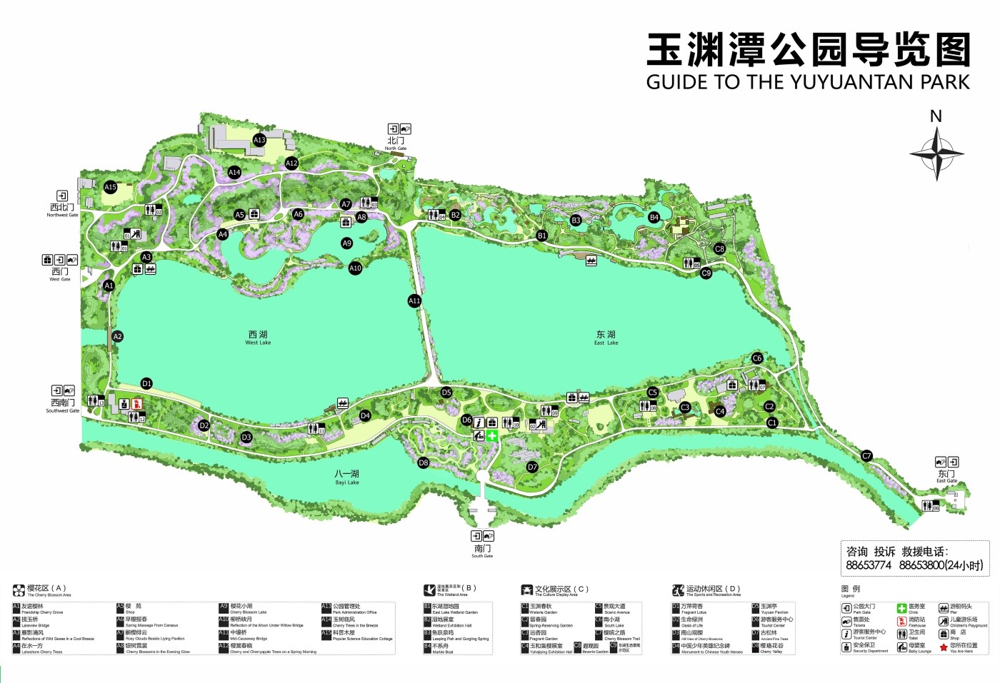

🌿 玉渊潭无障碍·智慧向导
轮椅友好 | 台阶陡坡自动规避 | 手动语音播报·地图交互引导
📍 1. 选起点/终点
🚩 起点
🏁 终点
🎤 语音说终点
💡 提示：也可直接点击地图上的景点图标来设置起点/终点
🧠 2. AI无障碍规划
🐢 最平缓 (避台阶/陡坡)
⚡ 距离最短
🪑 休息设施最多
✨ 智能规划无障碍路线
📋 推荐路线
点击规划后展示可选路线（点击选用）
♿ 3. 沿途无障碍设施
👉 规划路线后，沿途设施自动显示
🔊 自选语音播报
🗣️ 播报路线摘要
🚻 播报沿途设施
⏪ 上一步指引
🔉 播报下一步 →
🔄 重播当前指引
💬 点击上方按钮，手动获取语音导航信息
🆘 应急安全保障
🚨 一键求助（弹窗+手动语音）
⚠️ 模拟路段临时封闭 → 重规划
🚪 最近无障碍出口 & 疏散路线
📢 语音播报疏散指引

🗺️ 点击地图上的景点图标位置，可快速设为起点或终点（弹出选择）